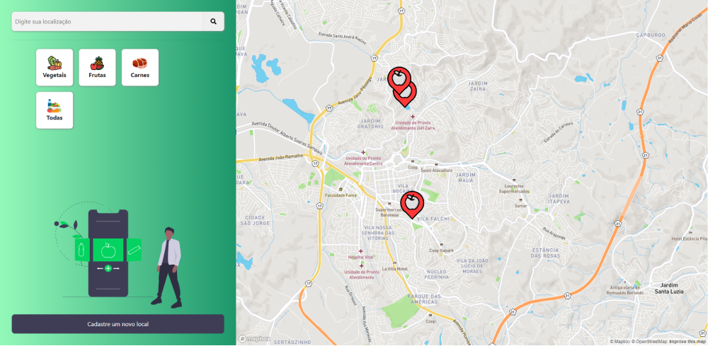
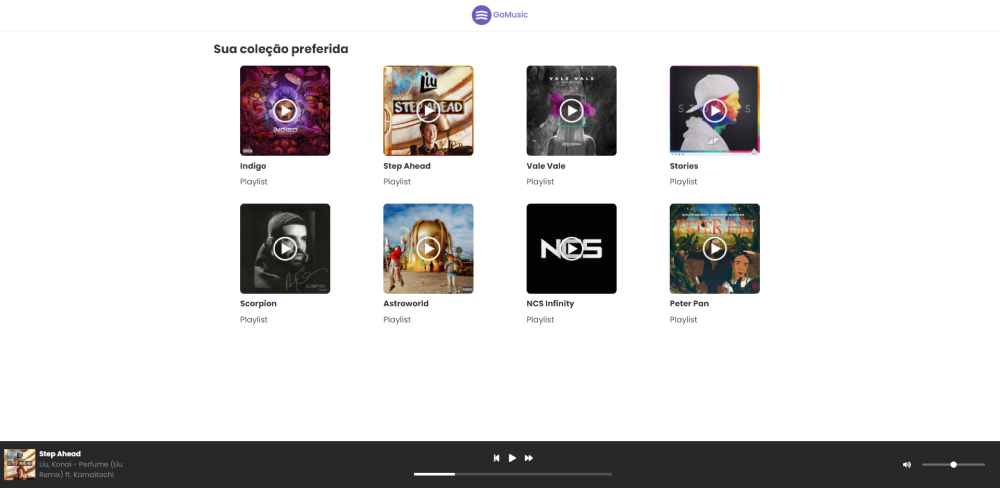
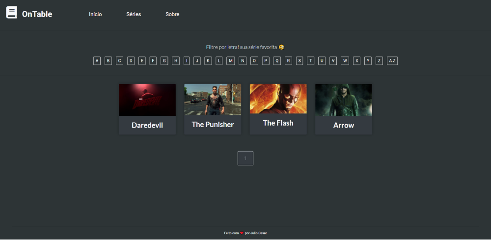
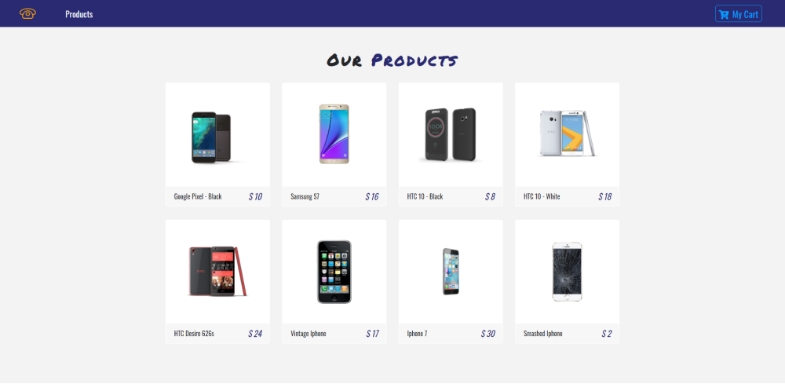

Hey 👋, I'm a Full Stack Developer
Software Engineer com foco em Front-end e arquitetura de aplicações modernas. Construindo produtos digitais escaláveis e eficientes.
Sou desenvolvedor de software com foco em Front-end e arquitetura de aplicações modernas, com experiência na construção de produtos digitais escaláveis.
Atualmente atuo principalmente com Angular e TypeScript, desenvolvendo aplicações baseadas em Micro Frontends e arquitetura de componentes, com foco em performance, escalabilidade e manutenibilidade.
Tenho grande interesse em engenharia de software bem estruturada, aplicando princípios como Clean Architecture, boas práticas de componentização, testes automatizados e observabilidade para construir aplicações robustas e sustentáveis ao longo do tempo.
Além do ecossistema Front-end, também possuo experiência trabalhando com Java, C#, .NET e Node.js, o que me permite transitar entre diferentes camadas da aplicação e colaborar de forma mais completa em arquiteturas distribuídas.
"Sou movido por aprendizado contínuo, desafios técnicos e pela oportunidade de construir produtos que impactem milhares de pessoas."
Atualmente estou cursando uma pós-graduação em Engenharia de Software com foco em Inteligência Artificial aplicada, orientada por Erick Wendel.
Aprofundando conhecimentos em sistemas inteligentes, LLMs e aplicação prática de IA em produtos de software.
Grande interesse em arquitetura de software, engenharia de produto e inteligência artificial aplicada a aplicações reais, explorando constantemente novas formas de construir sistemas mais inteligentes e eficientes.
Ferramentas, linguagens e conceitos presentes no meu dia a dia como engenheiro de software.


Aplicação criada durante as aulas da faculdade, feita apenas com HTML, CSS e JS.
Ver site

Loja de smartphones feita com ReactJS. Demonstração de listagem, carrinho e estado da aplicação.
Ver siteSite desenvolvido como resposta criativa para o processo da Brazil Generation.
Ver site